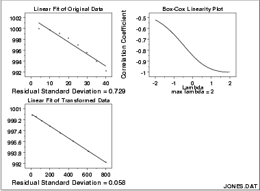

|
1.
Exploratory Data Analysis
1.3. EDA Techniques 1.3.3. Graphical Techniques: Alphabetic
|
|||
|
Purpose: Find the transformation of the X variable that maximizes the correlation between a Y and an X variable |
When performing a linear fit of Y against X, an appropriate
transformation of X can often significantly improve the fit.
The Box-Cox transformation
(Box and Cox, 1964) is a
particularly useful family of transformations. It is defined as:
The Box-Cox linearity plot is a plot of the correlation between Y and the transformed X for given values of \( \lambda \). That is, \( \lambda \) is the coordinate for the horizontal axis variable and the value of the correlation between Y and the transformed X is the coordinate for the vertical axis of the plot. The value of \( \lambda \) corresponding to the maximum correlation (or minimum for negative correlation) on the plot is then the optimal choice for \( \lambda \). Transforming X is used to improve the fit. The Box-Cox transformation applied to Y can be used as the basis for meeting the error assumptions. That case is not covered here. See page 225 of (Draper and Smith, 1981) or page 77 of (Ryan, 1997) for a discussion of this case. |
||
| Sample Plot |

The plot of the original data with the predicted values from a linear fit indicate that a quadratic fit might be preferable. The Box-Cox linearity plot shows a value of \( \lambda \) = 2.0. The plot of the transformed data with the predicted values from a linear fit with the transformed data shows a better fit (verified by the significant reduction in the residual standard deviation). |
||
| Definition |
Box-Cox linearity plots are formed by
|
||
| Questions |
The Box-Cox linearity plot can provide answers to the following
questions:
|
||
|
Importance: Find a suitable transformation |
Transformations can often significantly improve a fit. The Box-Cox linearity plot provides a convenient way to find a suitable transformation without engaging in a lot of trial and error fitting. | ||
| Related Techniques |
Linear Regression Box-Cox Normality Plot |
||
| Case Study | The Box-Cox linearity plot is demonstrated in the Alaska pipeline data case study. | ||
| Software | Box-Cox linearity plots are not a standard part of most general purpose statistical software programs. However, the underlying technique is based on a transformation and computing a correlation coefficient. So if a statistical program supports these capabilities, writing a macro for a Box-Cox linearity plot should be feasible. | ||